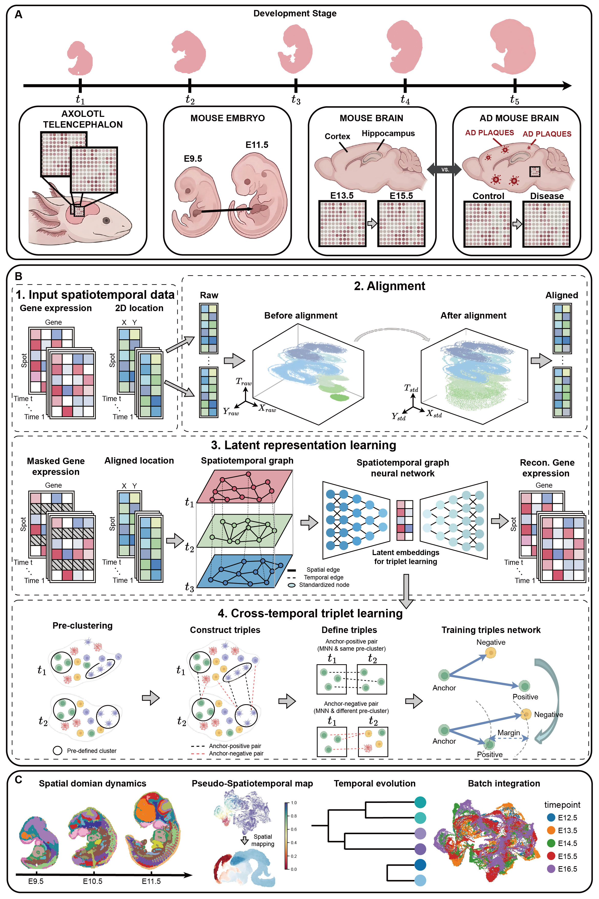

SpaTemporal: a deep temporal-aware framework for the integration of spatiotemporal transcriptomics
- Tutorial 1: Alignment of developmental mouse embryo data
- Tutorial 2: Alignment of developmental axolotl telencephalon data
- Tutorial 3: Aligning different states and time periods of Alzheimer’s disease mice data
- Tutorial 4: Integrating developmental mouse embryo data
- Tutorial 5: Integrating developmental mouse brain data
- Tutorial 6: Integrating developmental axolotl telencephalon data
- Tutorial 7: Integrating Alzheimer’s mouse brain data
Overview of SpaTemporal
{kind=link}

(A) Representative spatiotemporal transcriptomics datasets across developmental stages and conditions, including axolotl telencephalon, mouse embryo development, mouse brain development, and mouse Alzheimer’s disease. (B) Workflow of SpaTemporal. 1. Input gene expression and spatial coordinates from multiple time points. 2. Alignment of spatial coordinates into a shared reference to reduce morphological variation. 3. Latent representation learning via a spatiotemporal graph neural network that integrates spatial and temporal dependencies. 4. Cross-temporal triplet learning, where triplets are constructed in the latent space to enforce temporal consistency and improve representation discriminability. (C) Downstream analyses, including spatial domain dynamics, pseudo-spatiotemporal mapping, temporal evolution inference, and multi-time-point data integration.
Installation
First clone the repository.
https://github.com/JinyunNiu/SpaTemporal.git
cd SpaTemporal-main
It’s recommended to create a separate conda environment for running STAligner:
#create an environment called SpaTemporal
conda create -n SpaTemporal python=3.8
#activate your environment
conda activate SpaTemporal
Install all the required packages.
pip install -r requiements.txt
The torch-geometric library is also required, please see the installation steps in https://github.com/pyg-team/pytorch_geometric#installation
The use of the mclust algorithm requires the rpy2 package (Python) and the mclust package (R). See https://pypi.org/project/rpy2/ and https://cran.r-project.org/web/packages/mclust/index.html for detail.
Install SpaTemporal.
python setup.py build
python setup.py install